see
Sivas
Government House
Located in the city center, the Government House was built in 1884, and in the beginning, it only had two floors and 42 rooms. In time, the building could not meet the needs, and therefore, a third floor with 22 rooms was added in 1913. The first two floors of the building were made of cut stone and the third floor was built in 1913 using lumber. There is a triple entrance technique with an empirical style. The Government House has a simple arrangement in general. The protruding entrance sections, the semicircular arches on the windows and the sharp arches and the moldings at the floor separations, the long wooden eaves, and the "flying buttresses" are applications that bring movement to the facades.
Gendarmerie Building
According to the inscription on it, the building was erected in 1908 as the Gendarmerie Office. The entire building is built of cut stone, has a wooden roof, and the roof is covered with galvanized metal. From the inside, the ceiling and floor of the volumes that make up the corner tower are made of lumber. The ceiling of the room on the second floor is decorated with artworks.
Buruciye Madrasa
Buruciye Madrasa is among the most famous structures of Sivas and Anatolia with its magnificent Crown gate. The Madrasa, which was built in 1271 during the period of Seljuk Sultan Gıyaseddin Keyhüsrev III, was solely built for the purpose of teaching physics, chemistry, and astronomy. It has the most symmetrical Madrasa plan in Anatolia. The Madrasa with an open courtyard is made of cut stone. It has four iwans and two floors.
The Double Minaret Madrasa
The madrasa was built in 1271/72. The only unique aspect of the building that has survived to the present day is its magnificent façade with the highest Crown gate in Anatolia. The two minarets rising above the Crown Gate have become the symbol of Sivas. It is one of the most monumental Madrasas built in Anatolia and is also known as Dârü'l-hadis. It is a two-story building with four iwans.
Gök Madrasa
The most important building where Turkish architecture and decoration art can be observed in one place was built in 1271 in Sivas. The marble stone door of Gök Medrese has a rich appearance that allows the light-shadow game to be experienced. The building has an open courtyard, four iwans, and a two-story plan. Gök Madrasa, especially with its monumental marble crown door and facade, fully reflects the character of the XIII Century. The main iwan, which should have been to the east of the madrasa, was destroyed, and was later built with lumber. The building, known to have served as a madrasa since its construction, was converted into a museum in 1926.
Şifaiye Madrasa and Darüşşifa (Hospital)
This structure is one of the most important Madrasas where patients were treated and medicine was also taught during the period of State of Seljuks. The part that has survived to the present day is the largest hospital in Anatolia. It was built in 1217/18. The courtyard with four iwans and portico is entered through the magnificent Crown gate. There are sun and moon symbols on the crown entrance and reliefs in the form of male and female heads in the main iwan. In 1220, the south iwan was turned into a mausoleum.
It is the largest of the Seljuk Medical sites and hospitals in Anatolia. The hospital was converted into a madrasa with an edict issued in 1768 and was used as a supply warehouse during World War I.
Atatürk and Sivas Congress Museum
The Sivas Congress, which was organized with the invitation and arrangement of Mustafa Kemal Atatürk and which is the first national Congress, gathered here between September 4 and 11, 1919. On the other hand, it has the distinction of being the first headquarters of the national struggle as the de facto capital of the country, where the War of Independence was governed, between 2 September and 18 December 1919 for a duration of 108 days.
Archaeological Museum
Built in 1914 as the Mekteb-i Sanayi Factory, the building is the largest archeology museum in Central Anatolia.
In the museum, fossil remains of various mammals that lived in the region 9 million years ago, as well as many findings belonging to the Chalcolithic Age (5500-3000 BC), the Old Bronze Age (3000-2000 BC) and the Hittites, as well as Roman, Byzantine, periods and items belonging to the Seljuk and Ottoman periods are also exhibited.
Âşık Veysel Museum
The house of the famous Turkish Folk Poet Âşık Veysel Şatıroğlu, located in Sivas Şarkışla District's Sivrialan Village, was expropriated in 1979 and opened as a museum in 1982. In the museum, Âşık Veysel's personal belongings, photographs, poems, and works published about him are exhibited.
Âşık Veysel Culture and Art House
It was opened to service and to visit in the civic center of Sivas on 21 March 2018 as a Culture and Art House, which keeps alive the name of minstrel Âşık Veysel ŞATIROĞLU, in order to continue the tradition of minstrelsy, which is registered in UNESCO's Intangible Cultural Heritage National and Provincial Inventory.
Historical Mansions
İnönü Mansion, which is the mansion where İsmet İnönü, the second President of the Republic of Türkiye, lived during his secondary schooling, Susamışlar Mansion, which was built in the 19th century and used as Mevlevihane and a venue for the Semah performances, Osman Ağa Mansion, which is used as a public library and coffee house, Abdi Ağa Mansion, which is managed as Sivas House and Ahmet Hüdai Museum House which is known as Green Mansion are some of the historical buildings in the city.
Saint Blaise
The tomb of Saint Blaise, who is estimated to have lived in Sivas between 280 and 316, resides in Sivas. He was well known to be a throat and eyes physician. He is widely accepted as one of the first bishops of Christianity in Anatolia. Many churches and monuments were dedicated in his name in the Christian world.
Divriği Ulu Mosque and Darüşşifa (Hospital)
It was built during the Mengücek Principality period of the Anatolian Seljuk State. The magnificent motifs, which reflect the most precious and finest examples of stonework, created by masters from Ahlat and Tbilisi, attract the attention and awareness of the whole world. It is one of the masterpieces of Islamic architecture and it was included in the list of "World Cultural Heritage" by UNESCO in 1985.
Rocky Caves Archaeological Site
Rocky Caves located in Ekinli Village of Zara District have been registered as archaeological sites. It is thought that these rocky caves were built and used by local people who needed to escape and hide from the attacks of the Romans in the first years of Christianity. A small number of Roman amorphous ceramic pieces were found in the excavation soil taken out from an illegal excavation pit.
Yıldızeli - Kayalıpınar Hittite Cities
Altınyayla-Sarissa
Yıldızeli -Kayapınar (Samuha Hittite City), which is among the important settlements of the Hittites, takes you on a journey to the depths of history, and the Hittite City of Altınyayla Sarissa, where the first written agreement in the world was signed with its 4 thousand years history, are among the points of interest for visitors in the city.
Curved Bridge
Rumor has it that an apprentice working with a great master leaves his master and begins to build this bridge. During the construction of the bridge, the beauty of the bridge is heard by his earlier master.
While his master praises his apprentice with a stanza, he asks him to give the bridge a little curvature to be safe from the evil eye. The apprentice fulfills his master's request and completes the bridge in an oblique manner. The Curved Bridge, which is thought to be a work of the State of Seljuk era, is one of the visual pulchritudes that you should definitely see during your visit to Sivas.
Historical Inns
Behram Paşa Inn, which was built in 1576 and now provides accommodation services as a private facility; Subaşı Inn, which was built in the 16th century and is an inn where tradespeople sell dry food, Çorapçı Inn, which is used as a Culture and Art House, and Taşhan, which was built in the second half of the 19th century, are among the historic inns in the city.
Historical Mosques
Meydan Mosque, where the tomb of Şemseddin Sivasî, who is considered to be one of the three Shams in the Islamic world, is located; Ulu Mosque, which is one of the first mosques built by the Seljuks in Anatolia and where the tomb of İhramcızade İsmail Hakkı Toprak, who is one of the important spiritual figures of the Ottoman period, is located; Kale Mosque, which was built to serve the Madrasas in the historical city square, and the Sadaka Stone next to this mosque are among the places that should be seen by visitors in the city.
Hot Springs
Kangal Balıklı Hot spring is the only natural treatment center for psoriasis in the world. Located in Kangal district, Balıklı Hot spring is 98 km from Sivas city center. The toothless fish living in the hot spring water rupture the fluffy scabs softened by the water at 36-37°C, allowing the thermal water to affect inside the skin and cleanse the skin until it becomes smooth. There is one hotel, two swimming pools, four treatment pools, and promenade areas in the region, serving within the private enterprise. The hot spring has passed scientific examinations and the enterprise is licensed by the Ministry of Health. It is also common that full-fledged hospitals refer some of their patients who need this kind of treatment to the hot spring.
Çermik Hot Spring: The water temperature of Çermik Hot Spring, which is 31 km away from the city center, varies between 46°C and 50°C. The spring water, which has a composition of sodium, sulfate, hydro-carbonate, magnesium, and carbonate, is believed to be effective in the treatment of rheumatism, nervous system, respiratory tract, metabolism disorders, kidney and urinary tract, blood circulation, and heart diseases.
Altınkale: This hot spring is located in the locality of Çermik Hot Springs, 31 kilometers from the city center. It is a formation consisting of yellow-colored sediments due to the high amount of sulfur in the hot spring water and cascading pools similar to Pamukkale. Those who visit Altınkale can enjoy the pools and benefit from the natural warmth and healing of the spring water.
Çermik Cold Spring: Çermik Cold Spring, which is 20 km away from the city center, has a water temperature of 28°C and offers accommodation facilities in prefabricated houses. The spring water is believed to have healing effects for diseases of the stomach, intestines, and gall bladder, and especially nervous system disorders.
Emirhan and Eğribucak Rock Formations
These are two of areas that qualify as geological heritages. Eğribucak Rockies, which are about 5 km away from Emirhan Rockies and have an appearance resembling Fairy Chimneys of Cappadocia, has recently been a popular destination for trekking enthusiasts.
Yıldızdağı Ski Center
Yıldızdağı Winter Sports Tourism Center has the quality to be one of the most important ski centers of our country with its slope, height, elevation difference of the tracks, track variety and possible future tracks, snow quality, and duration of snow. Yıldızdağı Winter Sports Tourism Center possesses technical qualifications for large organizations.
Moreover, water sports such as diving, boating, jet skiing, angling can be performed in Yıldız Lake, which is aimed to come to the fore not only with winter sports opportunities but also with summer activities. The lake is beautifully located at the foot of Yıldız Mountain.
Mountaineering, trekking, paragliding, mountain biking, camping, horse riding, and kite flying activities for children are also organized in order to promote summer activities. Sports clubs that set up their camping tents take a walk to Yıldız Mountain and reflect the flora and fauna of the region on their shutters during their photo safaris. In addition, there are viewing terraces, picnic areas, and resting areas within the scope of summer activities in the region. There are also daily facilities and hotels for accommodation.